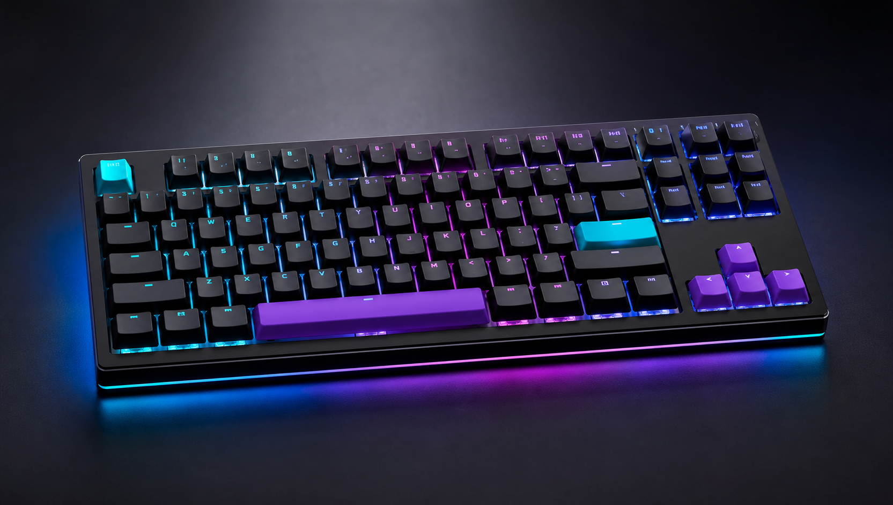

Keymap Studio
拖曳設定按鍵、建立 Fn 層，並把常用快捷鍵保存到鍵盤記憶體。
ROK Control Center
燈效、巨集、按鍵重映射、磁軸觸發點與隨機延遲曲線，都能在 ROK Control Center 中建立設定檔。
上班時使用安靜燈效與媒體鍵，遊戲時切換高回報率與 Rapid Trigger，剪輯時把巨集交給旋鈕與 Fn 層。

Modules
拖曳設定按鍵、建立 Fn 層，並把常用快捷鍵保存到鍵盤記憶體。
用色帶、節奏與分區做出商務低調或電競高亮的燈效。
磁軸機種可調觸發點、快速重置、死區與遊戲專用設定檔。
完整支援燈效、巨集、韌體更新。
支援按鍵重映射、設定檔與韌體更新。
部分機種可透過瀏覽器快速調整鍵位。